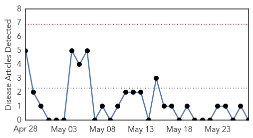
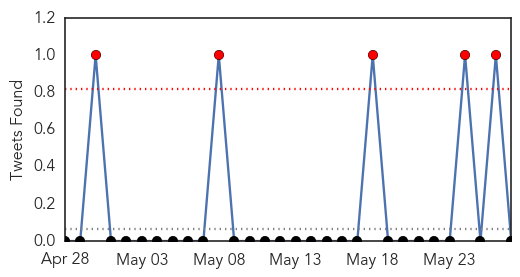

Pertussis
30-Day Web Trend
0 alerts, 0 warnings

30-Day Twitter Trend
0 alerts, 0 warnings

Article Locations

Article Confidences

Top Articles:
-
No articles found for May 27, 2015
Top Tweets:
-
No tweets found for May 27, 2015
Influenza
30-Day Web Trend
0 alerts, 0 warnings

30-Day Twitter Trend
5 alerts, 0 warnings

Article Locations

Article Confidences
Top Articles:
- 0.998
- H7N7 virus: bird flu confirmed at poultry farm in Lancashire
- 0.997
- Call to vaccinate as South West flu cases jump by more than 70 per cent
- 0.994
- Korea's health ministry under fire for MERS response, news, Health News, AsiaOne YourHealth
- 0.956
- Elderly hit hard by influenza this year
- 0.953
- What to know about dog flu
- 0.950
- Five out of six birds tested positive for Bird flu- Noguchi confirms
- 0.930
- Flu vaccines in short supply
- 0.872
- Dog flu 'just a matter of time' in Minnesota
- 0.854
- Helping in the fight against avian flu
- 0.811
- K-State can test for new strain of dog flu affecting Midwest; no cases reported in Kansas / LJWorld.com
- 0.808
- Hyderabad bird flu is replica of Chhattisgarh outbreak
- 0.751
- May 26, 2015 Archives
- 0.743
- Fourth Case of Bird Flu Found in Nebraska
- 0.637
- Bird Flu Sweeps Down Mississippi Flyway, CDC Says Low Risk for Humans
- 0.562
- Minnesota, Nebraska, Iowa flocks hit with avian flu
- 0.542
- KTTC Rochester, Austin, Mason City News, Weather and Sports
- 0.501
- Food supply safe, abundant despite bird flu outbreak
Top Tweets:
- 0.515
- A request to the World Health Organization for current information about the avian influenza H5N1 situation in Egypt http://t.co/9rGMewtwca